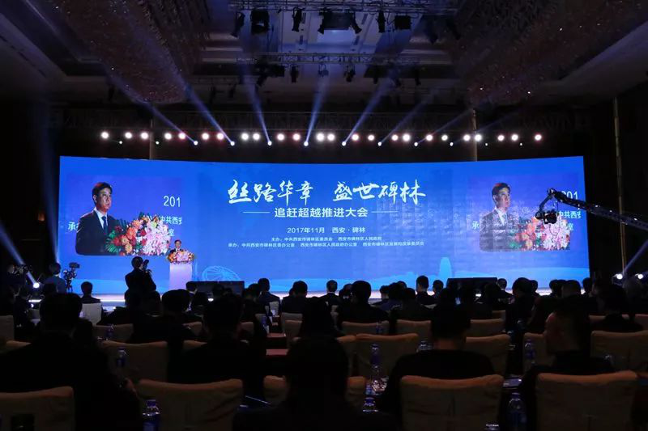
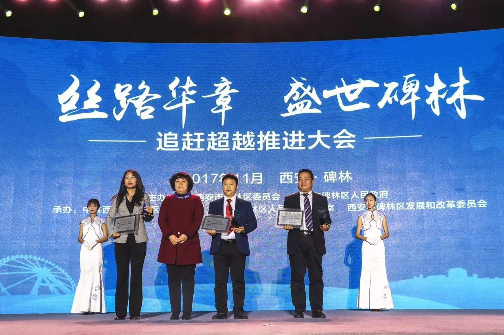
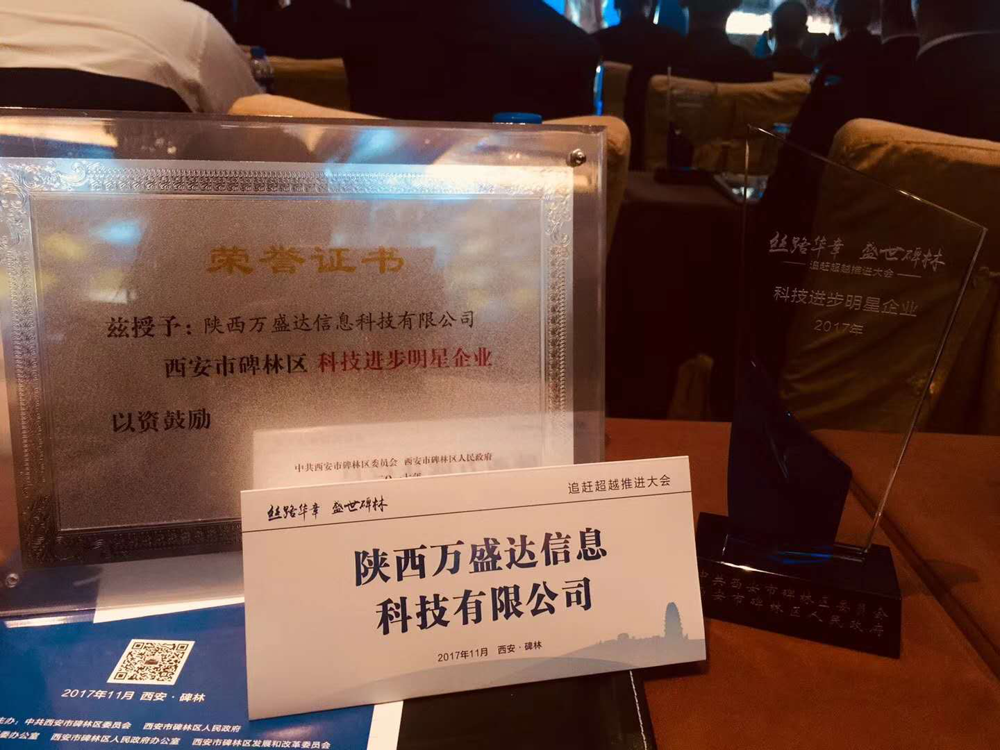

“丝路华章•盛世碑林”追赶超越推进大会现场
2017年11月3日下午，中共碑林区委员会、碑林区人民政府组织召开“丝路华章·盛世碑林”追赶超越推进大会，会上表彰区内优秀企事业单位和优秀企业家， 西安市副市长、碑林区委书记董劲威出席会议。
陕西万盛达信息科技有限公司荣获“科技进步明星企业”称号，公司业务保障部总经理兼汽车金融总监周丽作为企业代表上台领奖。

陕西万盛达企业代表周丽上台领奖（前排左一）

陕西万盛达荣获“科技进步明星企业”奖
2017年，陕西万盛达大动作频频，引发行业侧目。年初，被统计局纳入国家规模以上服务企业； 4月，获得科技局颁发的“西安市民营科技企业”认定，同时被列为陕西省工信厅两化融合示范企业和大数据应用示范企业； 5月20日，公司核心产品——陕西省机动车驾驶人管家式综合服务平台“优驾行easy”APP2.0版正式上线，并举行“美好车生活——优驾行easy2.0版APP发布会暨车主嘉年华”大型活动； 6月，交通安全卡发行超200万张，优驾行微信用户超300万人，优驾行easy APP用户超40万人； 接下来，优驾行easy APP将不断升级迭代新版本，持续优化产品功能和服务，显著提升用户体验，成为整个陕西省驾驶人综合服务平台的风向标。
陕西万盛达曾在2016年以经济支撑和稳增长影响较大被碑林区政府作为重点帮扶企业，并获得碑林区科技局、财政局贷款贴息扶持，而今又获此殊荣， 与碑林区政府积极营造的良好的企业成长环境是紧密相关的。陕西万盛达有责任也有信心同其他企业共同努力，把碑林打造成大西安创新的高地、创业的福地、财富的聚集地！